Next: Inner Products: the Dot Up: Vector Spaces Previous: Vector Spaces Contents Index
As was stated in the preface, a vector can be thought of as an ordered list of scalars from a field. We cannot in this text properly define what is meant by a space. However, we can think of a linear space as being defined by an ordered list of variables representing chosen types of scalars. We say that, for instance, two-dimensional Euclidean space is the space of all ordered pairs 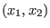 of real numbers. We refer to this space as
A point on a plane (or in a linear space) will be a given as a character and an ordered list of scalars.
For example, 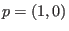
and 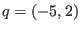
would be two points in
 .
We will use a character with a diacritical arrow like
.
We will use a character with a diacritical arrow like  to refer to a vector. We can then
write
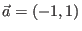
,
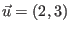
, etc. We will talk more of vectors in
to refer to a vector. We can then
write
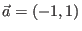
,
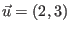
, etc. We will talk more of vectors in
 but first
we will give a formal definition of a vector space.
but first
we will give a formal definition of a vector space.
Committing these properties to memory is greatly facilitated by examining vectors in
 over
over
 .
(Proving that
.
(Proving that
 is a vector space is given as a problem at the end of this section. We
will take it on faith for the moment.)
These vectors have a very natural geometric interpretation.
Let us look at vector addition after a brief mention of how `vectors' are sometimes given
different interpretations.
A vector, to a mathematician, is a very general object and could even be a matrix.
To an epidemiologist, a vector is the agent of transmission of a disease.
A disease vector has nothing in common with the vectors we will study.
To a physicist or engineer, a vector is a physical quantity which has a direction and a magnitude, so it is often
drawn as an arrow on a plane.
However, a physicist is often also interested in the point
of application so the directed line segment (arrow) which represents the quantity does not usually
emanate from the origin. We will use vector subtraction to show how to translate such arrows into vectors
which do emanate from the origin.
is a vector space is given as a problem at the end of this section. We
will take it on faith for the moment.)
These vectors have a very natural geometric interpretation.
Let us look at vector addition after a brief mention of how `vectors' are sometimes given
different interpretations.
A vector, to a mathematician, is a very general object and could even be a matrix.
To an epidemiologist, a vector is the agent of transmission of a disease.
A disease vector has nothing in common with the vectors we will study.
To a physicist or engineer, a vector is a physical quantity which has a direction and a magnitude, so it is often
drawn as an arrow on a plane.
However, a physicist is often also interested in the point
of application so the directed line segment (arrow) which represents the quantity does not usually
emanate from the origin. We will use vector subtraction to show how to translate such arrows into vectors
which do emanate from the origin.
If there are two vectors
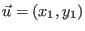
and
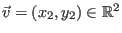
, then
 is defined as
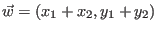
. Also,
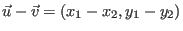
. This is illustrated in
Figure 5.2. If we have a directed line segment which starts at the point
is defined as
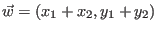
. Also,
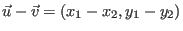
. This is illustrated in
Figure 5.2. If we have a directed line segment which starts at the point  and has
its terminal point at 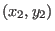
, then a vector which has the same magnitude and direction and which
emanates from the origin can be given as
and has
its terminal point at 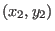
, then a vector which has the same magnitude and direction and which
emanates from the origin can be given as
 . In this way we translate the directed line segment
to the origin. Any directed line segment which can be translated to a given vector is said to be
equivalent to that vector. We can see in Figure 5.2 that
the directed line segment from the terminal point of
. In this way we translate the directed line segment
to the origin. Any directed line segment which can be translated to a given vector is said to be
equivalent to that vector. We can see in Figure 5.2 that
the directed line segment from the terminal point of  to the terminal point of
to the terminal point of
 is equivalent to
is equivalent to  . Similarly, the directed line segment from the terminal point of
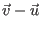
to the
terminal point of
. Similarly, the directed line segment from the terminal point of
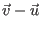
to the
terminal point of  is equivalent to
is equivalent to  .
.
Multiplying a non-zero vector by -1 will give a vector of the same magnitude which points in the opposite direction of the original vector. Multiplying a non-zero vector by a positive scalar will expand or compress the original vector, depending if the scalar is greater than one or less than one, respectively. The vector is scaled, hence the term scalar. Figure 5.3 shows these three scalar multiplications.
A vector
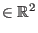
can be said to have 2 components. In the case
of a vector  , the components
are the two real numbers
, the components
are the two real numbers  and
and  .
.
We have mentioned directed line segments, the direction of arrows and the magnitude of a vector but have not been precise by what we mean. We will review a little trigonometry and then give a precise definition of the magnitude and direction of a vector.
Suppose we have
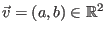
such that both its components are positive. We represent this situation
in Figure. The length or magnitude of  is given as
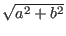
by the
Pythagorean theorem. We can extend this definition to give the magnitude
of any vector in
is given as
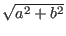
by the
Pythagorean theorem. We can extend this definition to give the magnitude
of any vector in
 where
where  is a positive integer.
We call this operation the norm of a vector in
is a positive integer.
We call this operation the norm of a vector in
 .
.
For
, we have
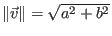
. Notice that we were careful to
say that this definition of norm only relates to vectors
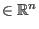
. It is possible to define the norm
in other ways for different spaces (even for
 ).
).
If we had a vector
The circumference
Sometimes angles are given in degrees, where 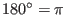 radians. In this text we will almost always use radian measurement.
Notice that an angle of  radians is the same as an angle of 0 radians or 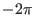
radians. For our
purposes we will always rewrite an angle
radians is the same as an angle of 0 radians or 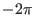
radians. For our
purposes we will always rewrite an angle  as the remainder after dividing by
in a similar
manner to how we calculate the residue of an integer modulus a prime. This means that
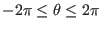
for any angle
as the remainder after dividing by
in a similar
manner to how we calculate the residue of an integer modulus a prime. This means that
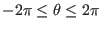
for any angle  . We use the Greek letters
. We use the Greek letters  (theta),
(phi) and
(rho)
to stand for angles. This is a common convention.
(theta),
(phi) and
(rho)
to stand for angles. This is a common convention.
The angle of a unit vector in
 is related to ratios of its components and its norm. These relations
are so important that they are given special names and are listed below. Suppose we have
is related to ratios of its components and its norm. These relations
are so important that they are given special names and are listed below. Suppose we have
 such that
such that
 and
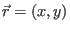
which makes an angle
and
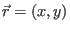
which makes an angle  with the
with the  -axis. We define:
-axis. We define:
The spoken form of these ratios are usually sine theta, cosine theta and tangent theta
(although usually the last ratio is simply read as tan theta). When one works with a coordinate system (an
 and
and  axis, for instance), then one is doing analytic geometry. Trigonometry involves
the use of the
,
and
ratios.
axis, for instance), then one is doing analytic geometry. Trigonometry involves
the use of the
,
and
ratios.
Suppose we have
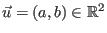
.
Since
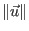
is a scalar, then any vector  can be written as
can be written as
The angle this unit vector makes is taken to be the angle of the vector

Traditionally these ratios are defined using the lengths of the sides of a right-angle triangle, a triangle with one angle equal to


where
![\includegraphics[width=4.3cm,height=4.4cm]{vec1.eps}](img1064.gif)
![\includegraphics[width=9.65cm,height=7.45cm]{vec5.eps}](img1120.gif)